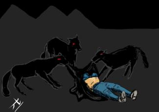
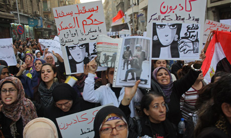
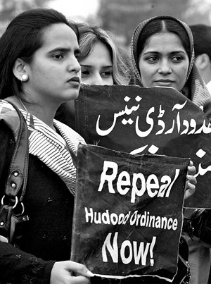
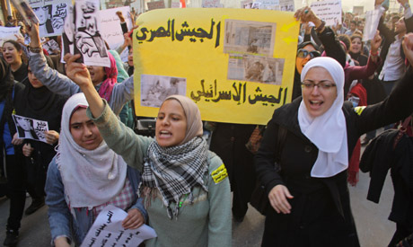
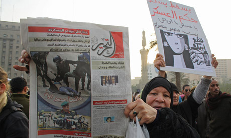

|
|
|
Browsing
Contact Us |
Campaigners |
Face to Face |
Tribune |
Interview |
News |
On the Web |
One Million |
Report
Farsi | Français | German | Italian | Spanish | العربية Also in this section
|

Joint Statement of Women’s Rights Organizations in Egypt against Militarization and BrutalityThursday 22 December 2011 Change for Equality: After five days of Egyptian people protesting against the shadow of militarism on the country, a broadcasted video of a woman who was stripped naked and violently assaulted by three soldiers prompted an intensive anger in the region and the whole world. Following to this occurrence, thousands of women marched on Tuesday in Thrir Square and condemned the military brutality. Meanwhile five women’s rights organizations in Egypt expressed their protest against the continuation of militarization and suppression of women human rights defenders in a statement. The statement is as follows:
 Continued Militarization: Increased Violence Against Women Human Rights Defenders During Dispersal of Cabinet Sit-in Women Activists Beaten, Brutalized and Subjected to Sexual Violence The targeting of Women human rights defenders seen over the course of an entire day, when the sit-in at the cabinet building was dispersed at dawn on December 16, is a continuation and clear escalation of militaristic policies aimed at Women human rights defenders, employed consistently by the former regime prior to the January 25 revolution. The policy of targeting Women human rights defenders is part of attempts by those currently in charge of the country, the various security agencies, and the remnants of the former regime to expel women from the public sphere. The events that ensued following the dispersal of the sit-in at the cabinet building by army forces at dawn on Friday heralded a new, unprecedented phase of violence against demonstrators, which has thus far claimed the lives of 9 protestors. These events were marked by targeted assaults on women; photographs and video clips clearly exposed the flagrant abuses faced by female activists, who were detained, beaten, dragged, and stripped of their clothing.
 The level of violence deployed this time by the armed forces shows that the use of force to disperse sit-ins and demonstrations and the targeting of Women human rights defenders is not a coincidence, but rather a systematic policy pursued by the armed forces and police. Institutional violence against women activists has been documented starting on March 9 with the virginity tests and the failure to investigate and hold accountable those responsible. It was seen again in the events of November 19, when the army disappeared from view as police forces took the lead in the using systematic violence against protestors, including women, and again in the events at the cabinet building on December 16. Nazra for Feminist Studies documented the testimonies of female activists who were subjected to sexual assaults, physical and verbal, by police forces and persons in civilian clothing during the events of November 19. The documented violations include arbitrary detention, beatings and kicks, at times with military boots, dragging, attempted choking, sexual harassment including attempts to strip women, rape threats during detention, insults of a sexual nature, and all manner of degrading, inhumane treatment, a well as the temporary confiscation of personal property.

 We cannot separate official media policies in all media outlets—audiovisual or press—from the general policy of those currently running the affairs of state in the transitional phase. This policy intentionally disregards all physical and psychological attacks on activists, peaceful protestors, and all advocates of the most basic human rights, especially women. State-owned media channels all failed to broadcast accurate images of the events or carry legitimate democratic demands. They have also refused to cover important issues such as the virginity tests conducted on female protestors on March 9, and the arbitrary arrest of several female demonstrators, doctors at field hospitals, and journalists in the events of Mohammed Mahmoud Street on November 19. Finally, the state-owned media refused to broadcast images from the popular press on December 16 that show vicious physical assaults on female protestors in front of the People’s Assembly. The official media line is clearly to ignore what women face when they demand their rights to expression, demonstration, and change with all other sectors of Egyptian society, which in turn prompts us to demand and take immediate action to change these policies, even if it requires replacing all the media leaders who colluded and continue to collude against groups demanding freedom and democracy, the most prominent form of this collusion being to conceal the truth. The undersigned organizations call first for a recognition of the abuses perpetrated by the army against demonstrators, including women. We also call for the formation of a committee composed of judges selected by the Supreme Judiciary Council to investigate the military personnel responsible for these violations and take all necessary measures required by a fair investigation. The undersigned also stress the need for a thoroughgoing change of media policies, which perpetuate the policies of the Mubarak era, characterized by the falsification of facts in favor of the regime and the refusal to cover the regime’s abuses.
 Links containing abuses suffered by Women human rights defenders since the dispersal of the cabinet sit-in at dawn on December 16: Video: http://youtu.be/4iboFV-yeTE - http://youtu.be/LXR_w_1mrr0 - http://youtu.be/mKEmez6P-aQ Photos: http://flic.kr/p/aWJygr Undersigned Organizations: 1. Nazra for Feminist Studies. 2. Cairo Institute for Human Rights Studies. 3. Association for Freedom of Thought and Expression. 4. Hisham Mubarak Law Center. 5. Women and Memory Forum. |